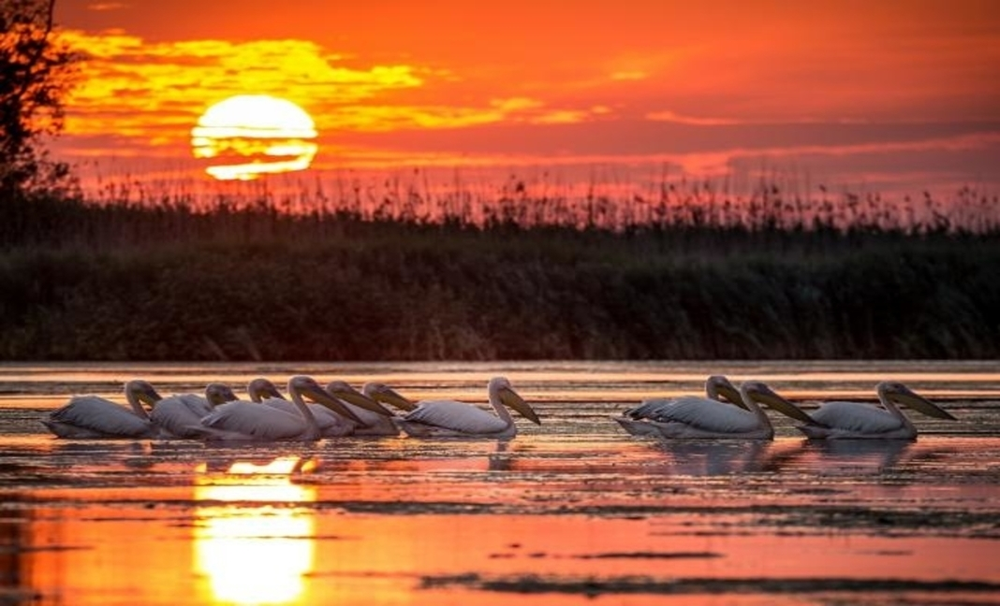
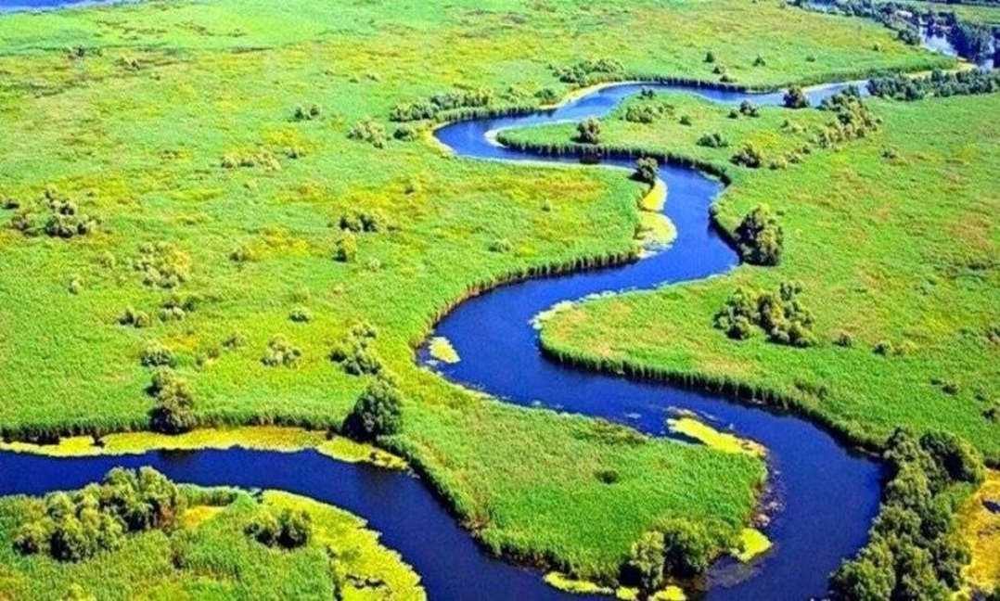
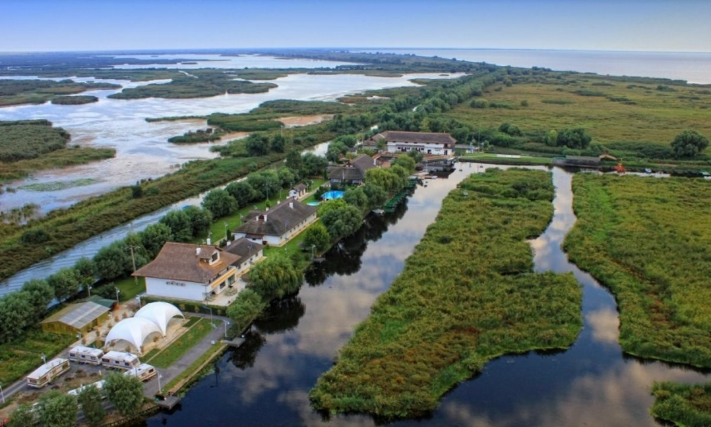

ROMANIA
MINUNATA


🕗 Orar zilnic: Agentie de turism 9:00-19:00
📞 Telefon/fax: 0769613780
ROMANIA
MINUNATA
🕗 Orar zilnic: Agentie de turism 9:00-19:00
📞 Telefon/fax: 0769613780
News |
Tip widget |
||
|---|---|---|---|
|  |  |  | reclame |
| Delta Dunarii - Delta Dunarii este atat de frumoasa, incat nu te saturi niciodata sa o admiri. Si este atat de diferita, cu fiecare anotimp care trece peste ea, incat o zona pe care o vezi vara iti va parea total schimbata primavara sau spre sfarsitul toamnei. De aceea, parca nu poti spune niciodata ca o cunosti cu adevarat. Padurea Letea te fascineaza oricand, iar bratul Sfantu Gheorghe te lasa mut de uimire in orice anotimp. Si parca si mancarea are alt gust pe la sfarsitul verii. | Litoralul Marii Negre - De cele mai multe ori, atunci cand plecam in concediu, avem in vedere doar ideea de relaxare in fata valurilor delicate ale marii, mangaiati de nisipul calduros. Uitam ca exista si alte lucruri care ne-ar putea imbogati experienta unui concediu reusit. Cum ar fi insa, daca intreg sejurul ar sta sub semnul relaxarii, incepand de la cazare si pana la final de vacanta? | Statiunea Poiana Brasov - Aflata la numai 12 km de orasul Brasov si la peste 1000 metri altitudine, Poiana Brasov este o oaza de liniste pentru toate categoriile de turisti in toate anotimpurile. Vara turistul invatat cu muntele poate sa faca drumetii montane in masivul Postavarul si imprejurimi descoperind numeroasele trasee marcate dar poate sa surprinda si adevarata natura, intrand pe potecile umblate numai de salbaticiuni. Iarna ii stau la dispozitie turistului partiile de ski de diferite grade de dificultate destinate atat incepatorilor cat si avansatilor in arta skiului. Transportul pe munte este asigurat cu mijloace mecanice pe cablu. Iarna ii stau la dispozitie turistului partiile de ski de diferite grade de dificultate destinate atat incepatorilor cat si avansatilor in arta skiului. Transportul pe munte este asigurat cu mijloace mecanice pe cablu. Iarna ii stau la dispozitie turistului partiile de ski de diferite grade de dificultate destinate atat incepatorilor cat si avansatilor in arta skiului. Transportul pe munte este asigurat cu mijloace mecanice pe cablu. | reclame |
| Evenimente | ||
|---|---|---|
| poza1 | poza2 | poza3 |